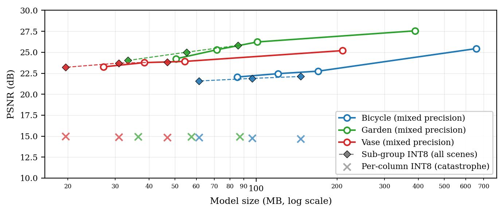

Final-year CS at IUBAT, Dhaka. I build memory-efficient 3D Gaussian Splatting and the ML tooling around it — compression that ships, pipelines that run with one command.
Training-free 3D Gaussian Splatting compression as a CLI + library. Mixed-precision and self-decodable sub-group INT8 — ~74% size reduction at sub-dB quality loss. The flagship.
In-browser 3DGS compression demo. Load a splat, watch quality vs. size trade off in real time. No backend — it all runs on the GPU in your tab.
Dockerized, one-command COLMAP → Nerfstudio dataset prep. Point it at a folder of photos, get a training-ready scene. Published to ghcr, OCI-labelled.
Chat with your papers, with per-(paper, page) citations so every answer points back to the source. Swappable LLM backend — Groq or Gemini.

A scene-independent quality cliff turned out to be a quantization-range artifact. Morton Z-order sub-group ranges recover to within 0.08–0.66 dB of FP16, self-decodable from a sidecar.
Post-pruning fine-tuning that looked like it ran but moved no weights. Pruning outside the densification strategy desynced the optimizer's moment buffers — steps landing on stale tensors.
I work where 3D vision meets systems engineering — taking research-grade rendering and making it small enough, fast enough, and reproducible enough to actually use.
My thesis attacks 3DGS memory cost without retraining: adaptive opacity pruning, spherical-harmonic reduction, and a quantization scheme that survives contact with real scenes. The tools above are the parts I thought others should be able to run, not just read about.
Looking for a CS master's (Canada / Australia) and SWE work in 3D vision, graphics, or ML infrastructure.